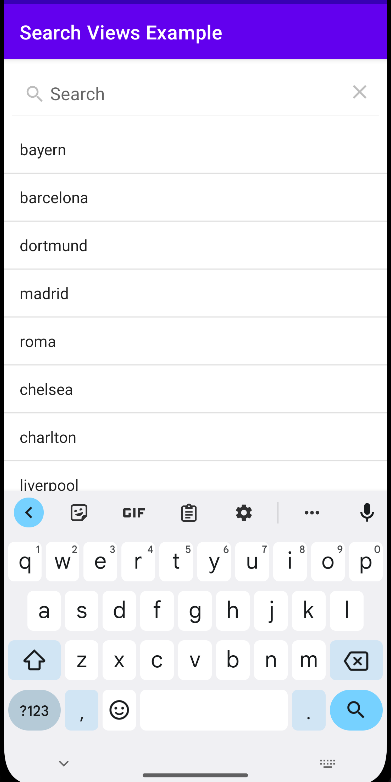
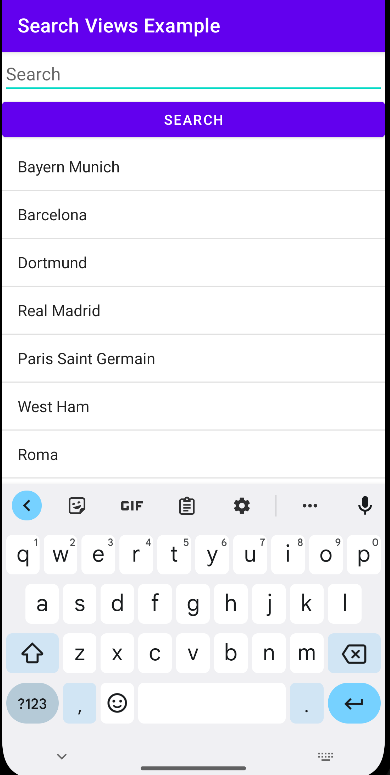
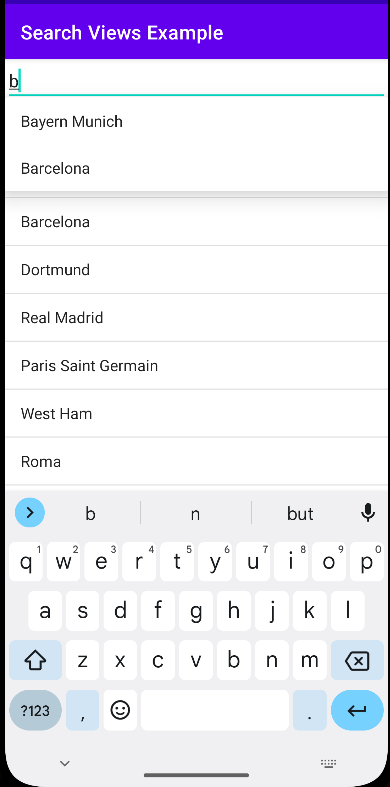
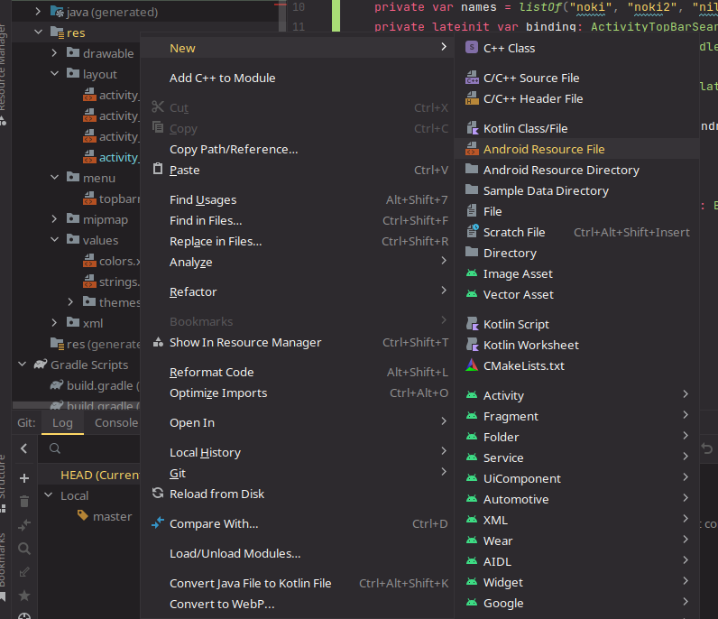
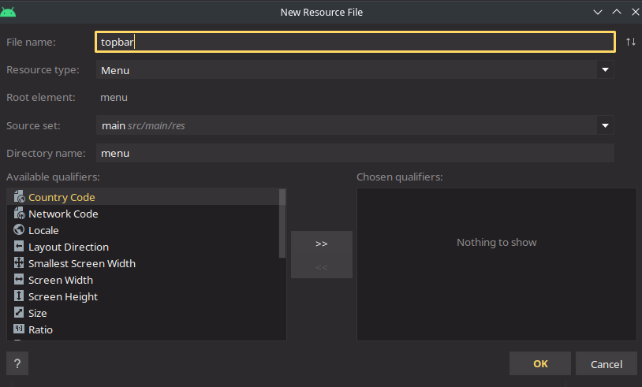
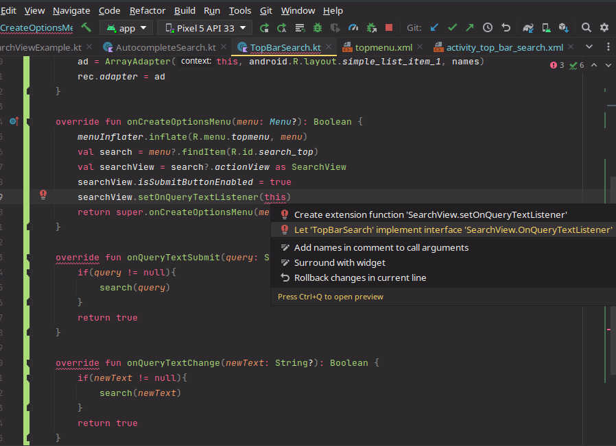
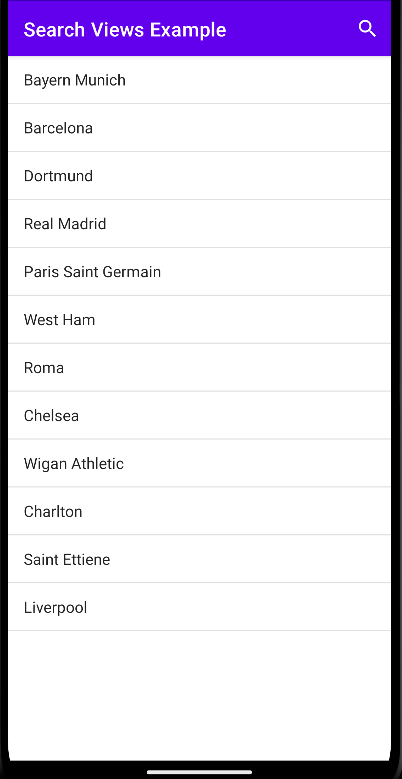
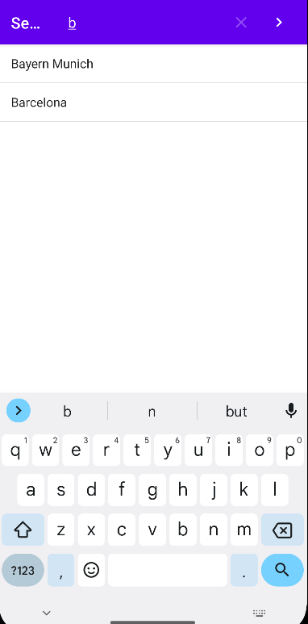

SearchTutorial
Search Views in Android
In this tutorial we will show a few simple ways to implement search in your app. There are a lot of ways to implement search functionalities, each with it’s strengths and weaknesses but we shall focus on the core functionalities of the search views.
Prerequisites
- This tutorial is done in Kotlin, but you should be able to easily implement these ideas in java.
- The Minimum SDK was selected as API 29
- Some knowledge of view layouts in android.
- We are assuming that you are comfortable working with viewbindings
- We are assuming that you are adding this to an Activity of an existing project so initial setup discussion is kept at a minimum
Set up
Enable viewBinding
- Go to your
build.gradlefile and add the following to the file
buildFeatures {
viewBinding = true
}
ViewBindings autogenerate classes from the layout so that we can easily work with them where needed. This makes finding and referring to views much easier and intuitive.
Using this guide
Example project
An example of the project can be found here Here the main activity has 3 buttons linked to 3 different activities
- Search View inside the layout of the Activity
- AutocompleteTextView with dropdown
- Search View in Top Bar You can choose to follow whatever you like the relevant files to check are the Activity and the layout associated with it. We prefer the Top Bar search as it is the fastest and most reliable.
Search View in main layout of the activity
- Create an empty activity and edit layout as you prefer - For this part we have created a LinearLayout with a SearchView and ListView for an Activity named “SearchViewExample” as apparent in the context. The layout must contain an
androidx.appcompat.widget.SearchViewto search in and a view of your choice to show the results
<?xml version="1.0" encoding="utf-8"?>
<LinearLayout xmlns:android="http://schemas.android.com/apk/res/android"
xmlns:app="http://schemas.android.com/apk/res-auto"
xmlns:tools="http://schemas.android.com/tools"
android:layout_width="match_parent"
android:layout_height="match_parent"
android:orientation="vertical"
tools:context=".SearchViewExample">
<androidx.appcompat.widget.SearchView
android:id="@+id/searchinmainbod"
android:layout_width="match_parent"
android:layout_height="wrap_content"
android:layout_marginTop="10dp"
app:queryHint="Search"
android:layout_marginBottom="10dp"/>
<ListView
android:id="@+id/listView1"
android:layout_width="match_parent"
android:layout_height="wrap_content"/>
</LinearLayout>
- Initialize a binding and a List of objects - The binding initialization should be straight forward as they are auto generated and for simplicity’s sake we have initialized an array of strings to search through.
class SearchViewExample : AppCompatActivity() {
private lateinit var binding: ActivitySearchviewExampleBinding
val names = listOf("Bayern Munich", "Barcelona", "Dortmund", "Real Madrid", "Paris Saint Germain", "West Ham", "Roma", "Chelsea", "Wigan Athletic", "Charlton", "Saint Ettiene", "Liverpool")
.
.
.
}
- Add the list view adapter- Since we are using a simple array of strings we can initialize and assign a list view adapter by -
val adaptername: ArrayAdapter<String> = ArrayAdapter(context, layout, arrayOfValues)
//example
val arrAdapter: ArrayAdapter<String> = ArrayAdapter(this, android.R.layout.simple_list_item_1, names)
binding.listView1.adapter = arrAdapter
We can make a custom adapter for the listview which takes a custom object. This should be familiar if one has worked with recyclerviews. The simple_list_item_1 is a built in layout.
4. Filtering the listView- We refer to the searchview from the binding and add an OnQueryTextListener . We do this in the example by -
binding.searchinmainbod.setOnQueryTextListener(object: androidx.appcompat.widget.SearchView.OnQueryTextListener{})
However writing this will give us an error. Which we will mitigate by implementing the member functions for the interface
binding.searchinmainbod.setOnQueryTextListener(object: androidx.appcompat.widget.SearchView.OnQueryTextListener{
override fun onQueryTextSubmit(query: String?): Boolean {
TODO("Not yet implemented")
//filter logic goes here
}
override fun onQueryTextChange(query: String?): Boolean {
TODO("Not yet implemented"
//filter logic goes here
}
})
The desired filter logic for your purpose should be implemented here. OnQueryTextSubmit will implement the logic after the user submits the query while OnQueryTextChange will implement the logic after every letter gets changed
In this example we have filtered it as follows,
binding.searchinmainbod.setOnQueryTextListener(object: androidx.appcompat.widget.SearchView.OnQueryTextListener{
override fun onQueryTextSubmit(query: String?): Boolean {
binding.searchinmainbod.clearFocus()
if(query!=null){
if(names.contains(query)){
arrAdapter.filter.filter(query)
}
}
return false
}
override fun onQueryTextChange(query: String?): Boolean {
if(names.contains(query)){
arrAdapter.filter.filter(query)
}
return false
}
})
Here we use the filter of the filterable adapter to filter out the Strings that match the query. You can write custom filterable adapter or change the adapter if you want. in the OnQuerySubmit method notice that we clearFocus from the search view. This is to return focus to activity after the search is done, that is the users clicks search.
- Finished Activity- our finished example looks something like this
class SearchviewExample : AppCompatActivity() {
//declaring the binding
private lateinit var binding: ActivitySearchviewExampleBinding
//declaring the array to be filtered
val names = listOf("Bayern Munich", "Barcelona", "Dortmund", "Real Madrid", "Paris Saint Germain", "West Ham", "Roma", "Chelsea", "Wigan Athletic", "Charlton", "Saint Ettiene", "Liverpool")
override fun onCreate(savedInstanceState: Bundle?) {
super.onCreate(savedInstanceState)
//initializing the binding
binding = ActivitySearchviewExampleBinding.inflate(layoutInflater)
setContentView(binding.root)
//declaring the array adapter for listview
val arrAdapter: ArrayAdapter<String> = ArrayAdapter(this, android.R.layout.simple_list_item_1, names)
//providing the adapter to the listview
binding.listView1.adapter = arrAdapter
//filtering using the searchview
binding.searchinmainbod.setOnQueryTextListener(object: androidx.appcompat.widget.SearchView.OnQueryTextListener{
override fun onQueryTextSubmit(query: String?): Boolean {
binding.searchinmainbod.clearFocus()
if(query!=null){
if(names.contains(query)){
arrAdapter.filter.filter(query)
}
}
return false
}
override fun onQueryTextChange(query: String?): Boolean {
if(names.contains(query)){
arrAdapter.filter.filter(query)
}
return false
}
})
}
}

AutocompleteTextView with dropdown
- Create an empty activity and edit layout as you prefer - For this part we have created a LinearLayout with an AutoCompleteTextView and ListView for an Activity named “AutoCompleteSearch” as apparent in the context. We also add a search button to filter the listview.
<?xml version="1.0" encoding="utf-8"?>
<LinearLayout xmlns:android="http://schemas.android.com/apk/res/android"
xmlns:app="http://schemas.android.com/apk/res-auto"
xmlns:tools="http://schemas.android.com/tools"
android:layout_width="match_parent"
android:layout_height="match_parent"
android:orientation="vertical"
tools:context=".AutocompleteSearch">
<AutoCompleteTextView
android:id="@+id/autoCompleteTextView1"
android:layout_width="match_parent"
android:layout_height="wrap_content"
android:text="Search" />
<Button
android:id="@+id/search_button"
android:layout_width="match_parent"
android:layout_height="wrap_content"
android:text="Search" />
<ListView
android:id="@+id/listView2"
android:layout_width="match_parent"
android:layout_height="match_parent" />
</LinearLayout>
- Initialize a binding and a List of objects - The binding initialization should be straight forward as they are auto generated and for simplicity’s sake we have initialized an array of strings to search through.
- Add the list view adapter- Since we are using a simple array of strings we can initialize and assign a list view adapter by -
val adaptername: ArrayAdapter<String> = ArrayAdapter(context, layout, arrayOfValues)
//example
val listAdapter: ArrayAdapter<String> = ArrayAdapter(this, android.R.layout.simple_list_item_1, names)
binding.listView2.adapter = listAdapter
We can make a custom adapter for the listview which takes a custom object. This should be familiar if one has worked with recyclerviews. The simple_list_item_1 is a built in layout.
4. Add the search view adapter- In order for the suggestions to show up we must provide an adapter. This step is similar to the step above except the fact that we have to pass the adapter through a method
var srcAdapter = ArrayAdapter(this, android.R.layout.simple_list_item_1, names)
binding.autoCompleteTextView1.setAdapter(srcAdapter)
- Filtering the list- we add an on click listener to out search button, get the string from the AutoCompleteTextView and filter as needed
binding.searchButton.setOnClickListener{
val st = binding.autoCompleteTextView1.text.toString()
//filter logic goes here
}
the finished example looks something like this
class AutocompleteSearch : AppCompatActivity() {
//declaring the binding
private lateinit var binding: ActivityAutocompleteSearchBinding
//declaring the array to be filtered
val names = listOf("Bayern Munich", "Barcelona", "Dortmund", "Real Madrid", "Paris Saint Germain", "West Ham", "Roma", "Chelsea", "Wigan Athletic", "Charlton", "Saint Ettiene", "Liverpool")
override fun onCreate(savedInstanceState: Bundle?) {
super.onCreate(savedInstanceState)
//initializing the binding
binding = ActivityAutocompleteSearchBinding.inflate(layoutInflater)
setContentView(binding.root)
//declaring the array adapter for autocompletetextview
var srcAdapter = ArrayAdapter(this, R.layout.simple_list_item_1, names)
//declaring the array adapter for listview
var listAdapter = ArrayAdapter(this, R.layout.simple_list_item_1, names)
binding.autoCompleteTextView1.threshold = 1
//providing the adapter to the searchview
binding.autoCompleteTextView1.setAdapter(srcAdapter)
//providing the adapter to the listview
binding.listView2.adapter = listAdapter
//filtering results on click of button
binding.searchButton.setOnClickListener {
val st = binding.autoCompleteTextView1.text.toString()
if(names.contains(st)) {
listAdapter.filter.filter(st)
}
}
}
}
Here the threshold refers to the number of letters that should be typed before the dropdown is shown. 
Search View in Top Bar
- Create an empty activity and edit layout as you prefer - For this part we have created a constraint layout with a ListView inside it all matching parent dimensions for an Activity named “TopBarSearch” as apparent in the context.
<?xml version="1.0" encoding="utf-8"?>
<androidx.constraintlayout.widget.ConstraintLayout xmlns:android="http://schemas.android.com/apk/res/android"
xmlns:app="http://schemas.android.com/apk/res-auto"
xmlns:tools="http://schemas.android.com/tools"
android:layout_width="match_parent"
android:layout_height="match_parent"
tools:context=".TopBarSearch">
<ListView
android:id="@+id/topBarLstView"
android:layout_width="match_parent"
android:layout_height="match_parent"
app:layout_constraintStart_toStartOf="parent"
app:layout_constraintTop_toTopOf="parent" />
</androidx.constraintlayout.widget.ConstraintLayout>
- Create a menu resource file - Right click the
resfolder in the project tab of android studio and go toNew -> Android Resource Filehere provide the name for your menu and select the resource type asmenu. OR click on theResource Managertab on the right and select menu from the overflow menu and click on the ‘+’ button and name your menu file. 3. Creating the menu layout- Once the menu is created we shall find a menu layout file inside the menu subfolder of the res directory. We create a menu item search, add an icon and add the actionViewClass asandroidx.appcompat.widget.SearchView. In our Example,
<?xml version="1.0" encoding="utf-8"?>
<menu xmlns:android="http://schemas.android.com/apk/res/android"
xmlns:app="http://schemas.android.com/apk/res-auto">
<item
android:id="@+id/search_top"
android:title="Search"
android:icon="@drawable/ic_baseline_search_24"
app:showAsAction="always"
app:actionViewClass="androidx.appcompat.widget.SearchView" />
</menu>
the app:showAsAction="always" anchors the search icon to the topbar.
4. Add bindings and set adapter for the listview- As above we add the necessary bindings and set the adapters to the list view.
override fun onCreate(savedInstanceState: Bundle?) {
super.onCreate(savedInstanceState)
binding = ActivityTopBarSearchBinding.inflate(layoutInflater)
setContentView(binding.root)
val adapter = ArrayAdapter(this, android.R.layout.simple_list_item_1, names)
binding.topBarLstView.adapter = adapter
}
- Add the menu to the topBar- We override the onCreateOptionsMenu to pass our menu by-
override fun onCreateOptionsMenu(menu: Menu?): Boolean {
//infltate the menu
menuInflater.inflate(R.menu.topbarmenu, menu)
//find the searchitem
val search = menu?.findItem(R.id.search_top)
//casting the searchview
val searchView = search?.actionView as SearchView
//enables a submit button
searchView.isSubmitButtonEnabled = true
//listens to changes in the searchview
searchView.setOnQueryTextListener(this)
return super.onCreateOptionsMenu(menu)
}
We will find that there is an error at the context passed to setOnQueryTextListener we hover over it and let the class implement the interface and select the functions to be implemented.
6. Filter the list view on queries - As in the 1st example the onQueryTextSubmit will apply the filter logic on query submit and onQueryTextChange will apply the filter logic on text change. We simply filter the strings as follows-
override fun onQueryTextSubmit(query: String?): Boolean {
if(query != null){
adapter.filter.filter(query)
}
return true
}
override fun onQueryTextChange(newText: String?): Boolean {
if(newText != null){
adapter.filter.filter(newText)
}
return true
}
- the finished code should look something like this-
class TopBarSearch : AppCompatActivity(), SearchView.OnQueryTextListener {
private var names = listOf("Bayern Munich", "Barcelona", "Dortmund", "Real Madrid", "Paris Saint Germain", "West Ham", "Roma", "Chelsea", "Wigan Athletic", "Charlton", "Saint Ettiene", "Liverpool")
private lateinit var adapter: ArrayAdapter<String>
private lateinit var binding: ActivityTopBarSearchBinding
override fun onCreate(savedInstanceState: Bundle?) {
super.onCreate(savedInstanceState)
setContentView(R.layout.activity_top_bar_search)
binding = ActivityTopBarSearchBinding.inflate(layoutInflater)
val rec: ListView = findViewById(R.id.topBarLstView)
adapter = ArrayAdapter(this, android.R.layout.simple_list_item_1, names)
rec.adapter = adapter
}
override fun onCreateOptionsMenu(menu: Menu?): Boolean {
menuInflater.inflate(R.menu.topmenu, menu)
val search = menu?.findItem(R.id.search_top)
val searchView = search?.actionView as SearchView
searchView.isSubmitButtonEnabled = true
searchView.setOnQueryTextListener(this)
return super.onCreateOptionsMenu(menu)
}
override fun onQueryTextSubmit(query: String?): Boolean {
if(query != null){
adapter.filter.filter(query)
} return true
}
override fun onQueryTextChange(newText: String?): Boolean {
if(newText != null){
adapter.filter.filter(newText)
} return true
}
}
 
Extensions
- If you want to make a custom filterable adapter see here
Precautions
- If you are copy-pasting the please remember to import the binding packages.
- SearchView is implemented in androidx and in legacy. Be careful when referring to either.
- when following this tutorial remember to create list of strings not array. This might cause issues
Resources
- AutoCompleteTextView Android Docs
- SearchView
- AutoCompleteTextView Tutorial
- Youtube tutorial for SearchView
- Youtube tutorial for Autocompletetextview
- Search in Toolbar